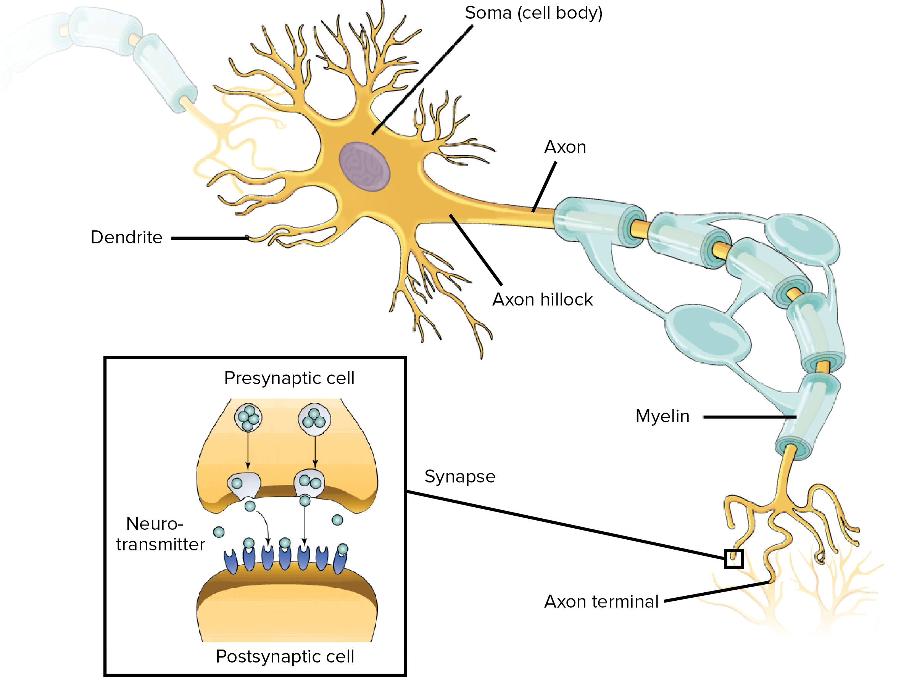
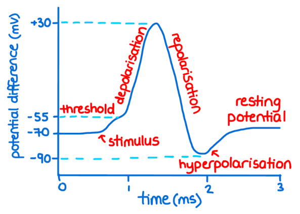
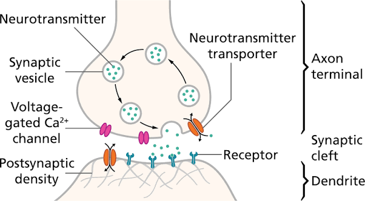
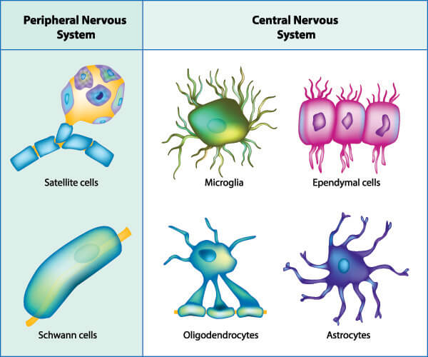

01 · Orientation
2.1 Overview
Neurons are the fundamental functional units of the nervous system. They process, transmit, and integrate information throughout the brain and body using electrical signals called action potentials and chemical signals carried by neurotransmitters. This communication allows the nervous system to perceive sensory information, generate thoughts, form memories, and coordinate behaviour. The adult human brain is estimated to contain approximately 86 billion neurons, interconnected through an enormous number of synapses to form complex neural networks.
Although neurons share the basic purpose of receiving and transmitting information, they are highly specialized. Sensory neurons carry afferent signals from sensory receptors toward the central nervous system. Motor neurons carry efferent signals from the brain and spinal cord to muscles and other effectors. Interneurons connect neurons within the central nervous system, supporting reflexes and more complex circuit processing.
Other neurons have structures adapted to particular roles. Pyramidal neurons are major excitatory projection neurons of the cerebral cortex and contribute to cognition, learning, and memory. Purkinje cells are large inhibitory neurons in the cerebellar cortex that play a central role in coordinating and refining movement.
02 · Reference
2.2 Neuron Glossary
Key terms for neuron anatomy, electrical signalling, neurotransmission, and synaptic communication.

- Soma (cell body)
- The central part of a neuron that contains the nucleus, supports cellular maintenance, and integrates many incoming signals.
- Cell membrane (plasma membrane)
- The phospholipid bilayer surrounding the neuron that regulates the movement of substances into and out of the cell.
- Nucleus
- The structure inside the soma that houses DNA and regulates activities including gene expression, protein synthesis, and cell maintenance.
- Dendrites
- Branching neuronal processes that receive signals from other cells and carry local electrical changes toward the soma.
- Axon
- A neuronal process that conducts action potentials away from the cell body toward other neurons, muscles, or glands.
- Axon hillock
- The region where the axon emerges from the soma and incoming signals are integrated near the action-potential initiation zone.
- Myelin sheath
- A lipid-rich insulating layer around many axons that enables faster and more efficient signal conduction.
- Node of Ranvier
- A short gap between myelin segments where voltage-gated ion channels regenerate the action potential during saltatory conduction.
- Terminal bouton
- A specialized ending of an axon that contains synaptic vesicles and releases neurotransmitters near a target cell.
- Synapse (synaptic cleft)
- The communication junction between a presynaptic cell and a postsynaptic target; at a chemical synapse, the synaptic cleft is the microscopic gap between them.
- Neurotransmitter
- A chemical messenger released by a neuron that binds to receptors on a target cell and changes its activity.
- Receptor
- A protein on the cell surface or inside a cell that responds to a specific neurotransmitter, hormone, drug, or other signalling molecule.
- Presynaptic neuron
- The neuron that releases neurotransmitters into a chemical synapse.
- Postsynaptic neuron
- The neuron or other target cell that contains receptors for the released neurotransmitter.
- Synaptic vesicle
- A small membrane-bound sac that stores neurotransmitters within the presynaptic terminal.
- Ion channel
- A membrane protein that allows specific ions such as Na+, K+, Ca2+, or Cl− to cross the membrane.
03 · Explore
Neural Communication and Support
Explore how neurons generate electrical signals, communicate across synapses, strengthen connections, and work alongside glial cells.
2.3 Action Potentials — Electrical Communication
An action potential is a rapid electrical signal generated by a temporary change in voltage across the neuron's membrane. Once initiated, it propagates along the axon toward the terminal boutons, carrying information to the neuron's output sites.
At rest, many neurons maintain a membrane potential near −70 mV, meaning the inside is negative relative to the outside. The exact value varies by neuron. Selective membrane permeability, especially through potassium leak channels, directly establishes much of this resting voltage, while the sodium–potassium pump maintains the underlying Na+ and K+ concentration gradients by moving three Na+ ions out for every two K+ ions brought in.
Incoming signals produce graded changes in membrane potential. Depolarization makes the membrane less negative and can move it toward threshold, often through an inward positive current such as Na+. Hyperpolarization makes the membrane more negative, while inhibitory input can also stabilize the voltage through shunting. Excitatory postsynaptic potentials (EPSPs) generally make firing more likely; inhibitory postsynaptic potentials (IPSPs) generally make it less likely.
When depolarization at the trigger zone reaches threshold, often near −50 to −55 mV but variable across neurons, voltage-gated Na+ channels open. Na+ influx creates rapid further depolarization through positive feedback. Near the action-potential peak, commonly around +30 mV, Na+ channels inactivate and slower voltage-gated K+ channels drive K+ out of the cell, repolarizing the membrane. Because some K+ channels remain open briefly, the voltage may undershoot its resting level before recovering.
The action potential is an all-or-none event: once threshold is reached, its size is not determined by the strength of the initiating stimulus. Stronger stimulation is typically represented by a higher frequency of action potentials rather than larger individual spikes.
After an action potential begins, the neuron enters an absolute refractory period, during which inactivated Na+ channels prevent a second action potential. This is followed by a relative refractory period, when another action potential is possible but requires a stronger depolarizing input because the membrane is still recovering.

2.4 Neurotransmitters — Chemical Communication
Before release, neurotransmitters are stored in synaptic vesicles within the presynaptic terminal. When an action potential reaches the terminal, it depolarizes the membrane and opens voltage-gated Ca2+ channels. The resulting Ca2+ influx activates the vesicle-release machinery; synaptotagmin acts as an important calcium sensor, helping trigger vesicle fusion with the presynaptic membrane.
Fusion releases neurotransmitter into the synaptic cleft through exocytosis. The transmitter diffuses across the cleft and binds to receptors on the postsynaptic cell. Depending on the transmitter, receptor, and ion channels or signalling pathways involved, the response may be excitatory, inhibitory, or modulatory.
A neuron usually receives input from many presynaptic cells at once. These graded inputs are integrated in two main ways. Spatial summation combines signals arriving at different synapses across the dendrites and soma. Temporal summation combines repeated signals arriving rapidly at the same synapse before earlier postsynaptic potentials have faded.
If the combined excitatory and inhibitory inputs bring the trigger zone to threshold, the neuron generates an action potential. If inhibition outweighs excitation, firing becomes less likely. Neurons are often classified by the messenger they primarily release, such as dopaminergic, glutamatergic, or GABAergic neurons, although some neurons can release more than one chemical messenger.

2.5 Long-Term Potentiation
Long-term potentiation (LTP) is a persistent increase in synaptic strength following particular patterns of repeated or strong activity. It is often summarized by Hebb's rule: "neurons that fire together, wire together." LTP is widely studied as a cellular mechanism that can contribute to learning and memory, especially at glutamatergic synapses in the hippocampus.
Glutamate is released when an action potential reaches the terminal of a glutamatergic neuron and Ca2+-dependent vesicle fusion occurs. The released glutamate can bind to AMPA and NMDA receptors on the postsynaptic neuron. AMPA receptor activation allows positive current, including Na+ influx, to depolarize the postsynaptic membrane.
NMDA receptors require glutamate binding as well as sufficient postsynaptic depolarization to relieve their voltage-dependent Mg2+ block. When they open, Ca2+ enters the postsynaptic neuron and acts as a second messenger, activating intracellular signalling pathways such as protein-kinase cascades.
These processes can increase the function and number of AMPA receptors at the postsynaptic membrane and can promote structural changes at the synapse. Future glutamate release then produces a larger postsynaptic response, strengthening the connection. This describes a well-studied NMDA-receptor-dependent form of LTP; other forms of synaptic potentiation also exist.
Key mechanism: glutamate release → AMPA receptor activation → postsynaptic depolarization relieves the Mg2+ block → NMDA receptor activation → Ca2+ influx → intracellular signalling → increased AMPA receptor function and availability → a stronger synaptic response.
2.6 Glial Cells
Neurons do not function independently. They work alongside glial cells, non-neuronal cells that support, protect, and regulate the nervous system. Glia provide structural and metabolic support, maintain homeostasis, help defend against injury and infection, regulate synaptic environments, form myelin, and participate in neural development, plasticity, and repair.
Glial cells were historically described as passive support cells, but modern neuroscience shows that they actively influence brain function. They regulate extracellular ions and neurotransmitters, contribute to protective barriers, remove damaged material, and shape how neural circuits develop and adapt.
- Astrocytes — CNS regulation and support: help supply metabolic support, regulate extracellular ion and neurotransmitter levels, interact with synapses, and contribute to the blood–brain barrier. Satellite glial cells perform some related support functions around neuronal cell bodies in peripheral ganglia.
- Microglia — CNS immune defence: continuously survey the neural environment, respond to injury or infection, influence inflammation, and remove damaged cells and debris through phagocytosis.
- Oligodendrocytes — CNS myelination: produce myelin around central axons, enabling rapid saltatory conduction between nodes of Ranvier. One oligodendrocyte can myelinate segments of multiple axons.
- Schwann cells — PNS myelination and repair: myelinate peripheral axons and support regeneration after peripheral nerve injury. Each myelinating Schwann cell forms one myelin segment around one axon.
- Ependymal and choroid plexus epithelial cells — ventricular and CSF functions: line the ventricular system and contribute to the production, movement, and regulation of cerebrospinal fluid.
